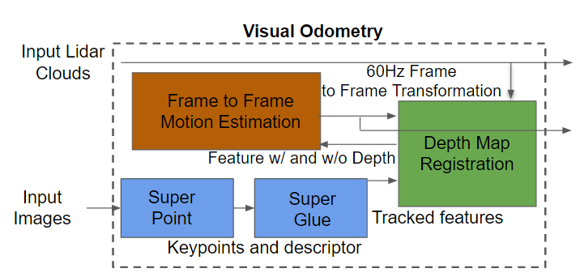
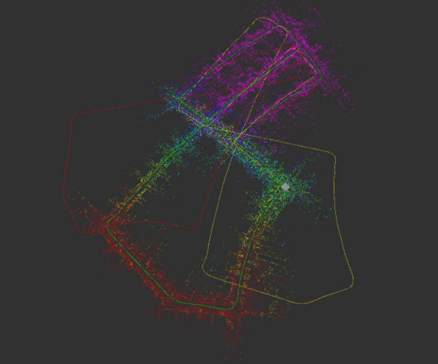
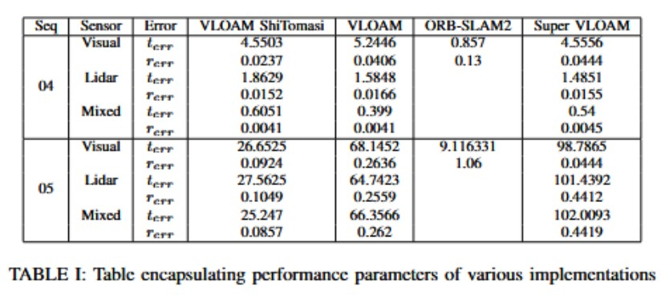

Super Visual LiDAR Odometry and Mapping (Super VLOAM)
Visual Lidar Odometry and mapping (VLOAM) is a state-of-the-art technique used in robotics for localizing and mapping an environment and a robot in real-time. It combines the benefits of both visual and lidar sensors to accurately estimate the robot's position and map its surroundings.
VLOAM works by using the visual sensor to extract visual features at a high frequency (60 Hz) from the environment, such as corners, edges, and textures. The lidar sensor, running at a low frequency (1 Hz) on the other hand, generates a 3D point cloud of the surrounding environment and helps in correcting the visual odometry drift. By fusing the visual features and lidar data, VLOAM is able to estimate the robot's position and create a high-resolution map of the environment.VLOAM works by using the visual sensor to extract visual features at a high frequency (60 Hz) from the environment, such as corners, edges, and textures. The lidar sensor, running at a low frequency (1 Hz) on the other hand, generates a 3D point cloud of the surrounding environment and helps in correcting the visual odometry drift. By fusing the visual features and lidar data, VLOAM is able to estimate the robot's position and create a high-resolution map of the environment.
By studying a state-of-the-art odometry method that fuses multiple sensors, we wished to enhance our understanding in this field. Initially, our scope of the project was to re-implement the original paper. However, following the feedback received, we decided it was more worthwhile to reuse existing code to reproduce a baseline, upon which we would attempt to improve the current method.
One of the main challenges faced by VLOAM is the lack of robustness to illumination changes, occlusions, and low-texture regions, which can cause the visual data to be unreliable. Furthermore, cost of the sensor is another challenge that we would like to address by comparing performance of VLOAM with RGBD based odometry method.

Our Work
To address the challenges mentioned, we would integrate deep-learning based methods: Superpoint model for extracting keypoints from the images and Superglue for matching these features. We would then compare our method with existing method to compare these methods. We will also follow up by comparing ORB-SLAM methods with our method/current VLOAM method to understand the justification of costs.In our proposed approach, we plan to replace the classical feature extraction and matching algorithms in VLOAM with SuperPoint and SuperGlue deep learning models respectively. We will integrate the SuperPoint and SuperGlue networks into the VLOAM pipeline, which we call Super-VLOAM.
To evaluate the performance of our proposed approach, we conduct experiments using real-world datasets. We compared the accuracy and efficiency of our Super-VLOAM model with the current VLOAM implementation. We expect that our proposed approach will improve the accuracy and robustness of VLOAM, especially in challenging scenarios such as low-texture regions and dynamic motion of the vehicle. We integrated the Superpoint and Superglue networks into VLOAM. We used pre-trained models trained using PyTorch, and converted them to the intermediate ONNX format for integration into our VLOAM (C++) code. We were able to successfully run inferences on the models on the CPU, but we are currently having trouble running them on the GPU.
We tested Super-VLOAM on KITTI odometry sequences 04 (simple) and 05 (more complex). On the simpler sequence, the performance was comparable to existing VLOAM, which uses ShiTomasi features and ORB descriptor matching in the visual odometry block. However, on the harder sequence, we had an underwhelming performance. On each frame, the processing was about 100x slower than the classical methods. The reported RMSE is in three digits for translational errors. We attribute this to the model running on the CPU, which takes considerable time to process the frames. As a result, multiple frames in the sequence are skipped. The skipped frames contain more features to match, which in turn worsens the performance. We are currently working on optimizing the code to improve the performance of Super-VLOAM on the GPU. We believe that this will allow us to achieve comparable performance to existing VLOAM on both simple and complex sequences.We have reproduced results with existing ORB-SLAM2 model for the purpose of comparing Visual Odometry part of Super-VLOAM with it.
Results
In this section we present results for sequence 04 and 05 of KITTI odometry dataset. In the table \ref{table:1} we have summarized performance parameters of various implementation for comparisions. Translational error is in meters and rotational errors is in radians. In the next section we will present results in detailed for sequence 04.
